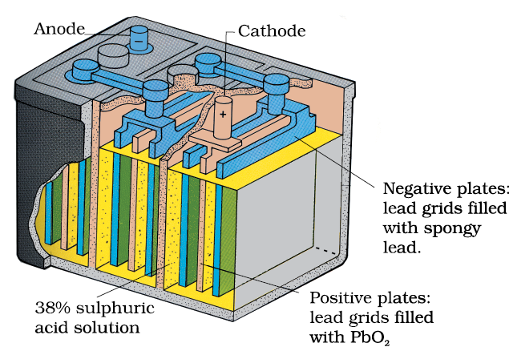

Any battery (actually it may have one or more than one cell connected in series) or cell that we use as a source of electrical energy is basically a galvanic cell where the chemical energy of the redox reaction is converted into electrical energy. However, for a battery to be of practical use it should be reasonably light, compact and its voltage should not vary appreciably during its use. There are mainly two types of batteries.
The most familiar example of this type is the dry cell (known as Leclanche cell after its discoverer) which is used commonly in our transistors and clocks. The cell consists of a zinc container that also acts as anode and the cathode is a carbon (graphite) rod surrounded by powdered manganese dioxide and carbon (Fig.3.8). The space between the electrodes is filled by a moist paste of ammonium chloride (NH4Cl) and zinc chloride (ZnCl2). The electrode reactions are complex, but they can be written approximately as follows :
Anode: Zn(s) → Zn2+ + 2e–
Cathode: MnO2+ NH4++ e–→ MnO(OH) + NH3
In the reaction at cathode, manganese is reduced from the + 4 oxidation state to the +3 state. Ammonia produced in the reaction forms a complex with Zn2+ to give [Zn (NH3)4]2+. The cell has a potential of nearly 1.5 V.
Mercury cell, (Fig. 3.9) suitable for low current devices like hearing aids, watches, etc. consists of zinc – mercury amalgam as anode and a paste of HgO and carbon as the cathode. The electrolyte is a paste of KOH and ZnO. The electrode reactions for the cell are given below:
Anode: Zn(Hg) + 2OH– → ZnO(s) + H2O + 2e–
Cathode: HgO + H2O + 2e– → Hg(l) + 2OH–
The overall reaction is represented by
Zn(Hg) + HgO(s) → ZnO(s) + Hg(l)
The cell potential is approximately 1.35 V and remains constant during its life as the overall reaction does not involve any ion in solution whose concentration can change during its life time.
A secondary cell after use can be recharged by passing current through it in the opposite direction so that it can be used again. A good secondary cell can undergo a large number of discharging and charging cycles. The most important secondary cell is the lead storage battery (Fig. 3.10) commonly used in automobiles and invertors. It consists of a lead anode and a grid of lead packed with lead dioxide (PbO2 ) as cathode. A 38% solution of sulphuric acid is used as an electrolyte.
The cell reactions when the battery is in use are given below:
Anode: Pb(s) + SO42–(aq) → PbSO4(s) + 2e–
Cathode: PbO2(s) + SO42–(aq) + 4H+(aq) + 2e– → PbSO4 (s) + 2H2O (l)
i.e., overall cell reaction consisting of cathode and anode reactions is:
Pb(s) + PbO2(s) + 2H2SO4(aq) → 2PbSO4(s) + 2H2O(l)
On charging the battery the reaction is reversed and PbSO4(s) on anode and cathode is converted into Pb and PbO2, respectively.
Another important secondary cell is the nickel-cadmium cell (Fig. 3.11) which has longer life than the lead storage cell but more expensive to manufacture. We shall not go into details of working of the cell and the electrode reactions during charging and discharging.
The overall reaction during discharge is:
Cd (s) + 2Ni(OH)3 (s) → CdO (s) + 2Ni(OH)2 (s) + H2O (l)